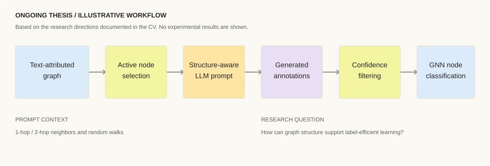
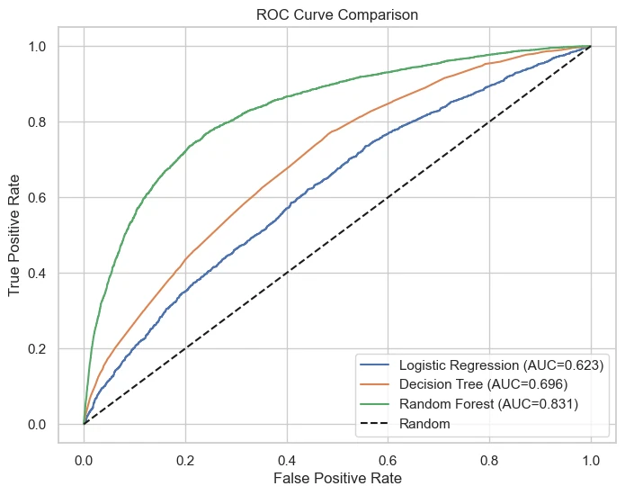
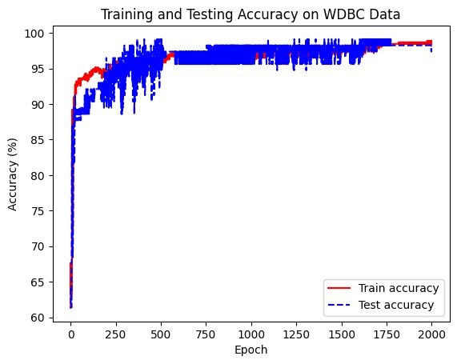
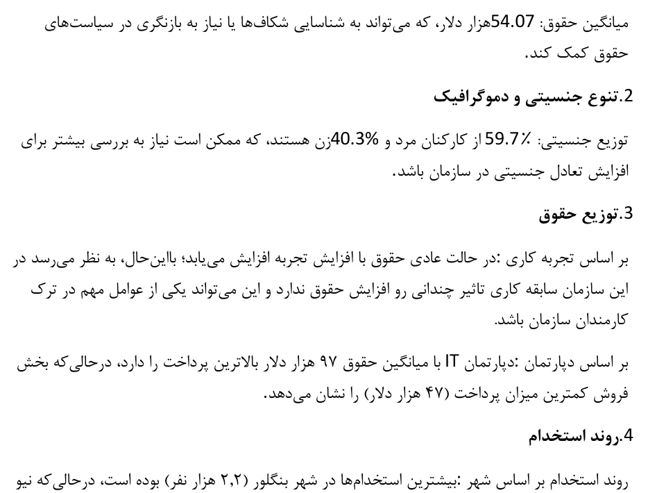
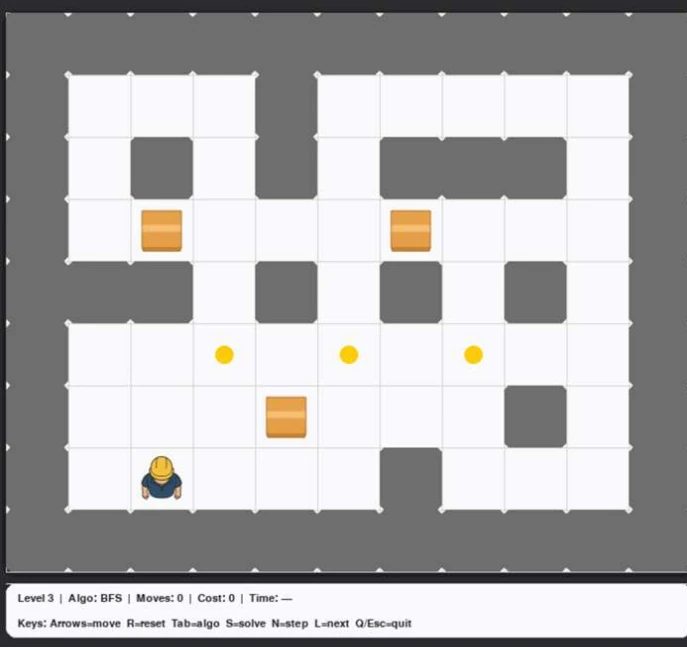

Structure-Aware LLM-Based Graph Node Labeling
Investigating how graph neighborhoods can inform LLM-generated annotations, and how those labels can support data-efficient GNN node classification.
Read the research overviewComputer Engineering · Data & AI
Computer Engineering | Data Analytics
AI & Graph Machine Learning
I’m a Computer Engineering student and Retail Data Analyst at EMRC. My undergraduate research explores how large language models and graph neural networks can learn from limited labeled data.
I'm a Computer Engineering undergraduate at Amirkabir University of Technology. My interests connect graph machine learning and large language models with a practical question: how can we learn more from limited labeled data?
Alongside my studies, I work as a Retail Data Analyst at EMRC, analyzing retail datasets and preparing client-facing reports. I also build Python tools to automate analytical workflows.
My software projects range from a neural network library to operating system extensions. Teaching has also been part of my studies, including a Head TA role in Business Intelligence.
Explore my researchGraph representations, language models, and learning with fewer labels.
Data preparation, business intelligence, and reports people can use.
From neural network components to operating systems and applications.
Work in graph ML, applied analytics, and software. Figures below come from the projects; the thesis workflow is illustrative.

Investigating how graph neighborhoods can inform LLM-generated annotations, and how those labels can support data-efficient GNN node classification.
Read the research overview
A loan default prediction pipeline combining target encoding, financial feature engineering, Random Forest tuning, and cost-sensitive evaluation.
View repository
Building neural network components from scratch: tensors, linear layers, activation and loss functions, backpropagation, and an SGD optimizer.
View repository
An interactive Power BI report exploring employee attrition, salary distributions, and hiring trends through data preparation and visual analysis.
View repository
AI implementations spanning Sokoban search with A*, crossword constraint satisfaction with AC-3, and Isolation agents using Minimax and Alpha-Beta pruning. Includes Q-learning and Bayesian inference with sampling methods.
View repositoryAn autonomous agent using selection, crossover, mutation, and board evaluation.
xv6 kernel enhancements, a learning web app, JavaFX, and Android projects.
Research · Machine learning · Data · Software
My thesis, A Structure-Aware LLM-Based Framework for Graph Node Labeling, develops from research in Dr. Mostafa Haghir Chehreghani's lab at Amirkabir University of Technology.
I'm developing a label-efficient node classification framework that combines LLM-generated annotations with graph neural networks on text-attributed graphs.
This work is ongoing. The directions below describe what I am investigating; they are not published findings or completed results.
Explore 1-hop and 2-hop neighbors and random walks as context for LLM-based graph node labeling.
Investigate active node selection to make more effective use of limited annotation resources.
Study confidence-based filtering of generated annotations and their use in training graph neural networks.
Retail analytics, reporting automation, and business intelligence experience alongside my degree.
EMRC
Analyze retail datasets and deliver client-facing reports. Built a reusable Python application for an internal workflow; currently developing a customizable pipeline for client report generation.
YAS Arghavani System Engineering Co.
Bank Mellat IT Holding
Developed Power BI dashboards for POS performance and maintenance. Modeled transaction data with Power Query and DAX, and integrated CRM and payment systems for reporting.
Computer Engineering at Amirkabir University of Technology, with teaching and practical training in data analysis.
B.Sc. in Computer Engineering
Undergraduate thesis: A Structure-Aware LLM-Based Framework for Graph Node Labeling.
Amirkabir University of Technology
Head TA for Business Intelligence in Fall 2025: designed instructional materials and course projects, and taught Power BI, Python, SQL, and data modeling.
Data Analysis Certificate · Quera / Summer 2025
Advanced Python Bootcamp · Sematec / Sep–Dec 2024
Grouped by how I use them: investigating models, understanding data, and engineering systems.
Persian / Native · English / Full professional proficiency
For research opportunities, data analytics work, or software projects, you can reach me by email or LinkedIn.